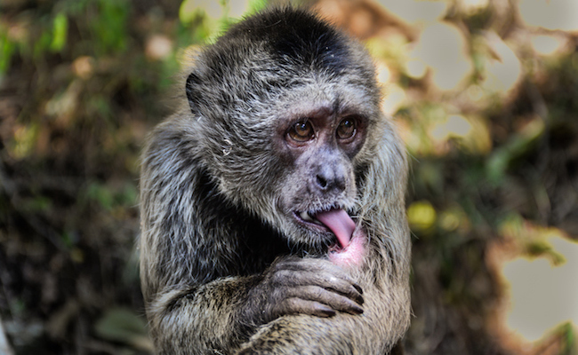
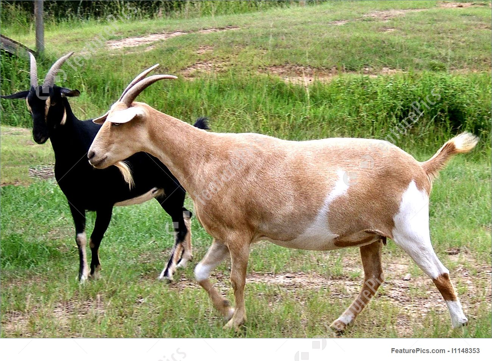

If the animal is small enough or safe to handle, an inexperienced person can use gloves and a towel, blanket, net or box to catch the animal and place it in a secure container.
It is important to keep the animal in a warm, dark and quiet place to reduce the stress of capture.
improve our wellbeing as humans, the attention given to animals is greatly changing, especially in developing countries.
It is important to acknowledge that these animals have made a great contribution to our survival and development for so many generations until now, therefore, their wellbeing is essential to ours.
We have trained and kept animals to suit our needs, forgetting that they also need our care and respect. Land that was previously for wildlife is being encroached on leaving most of these animals prone to human and wildlife conflict where now wildlife is considered to be a pest rather than a part of us.
